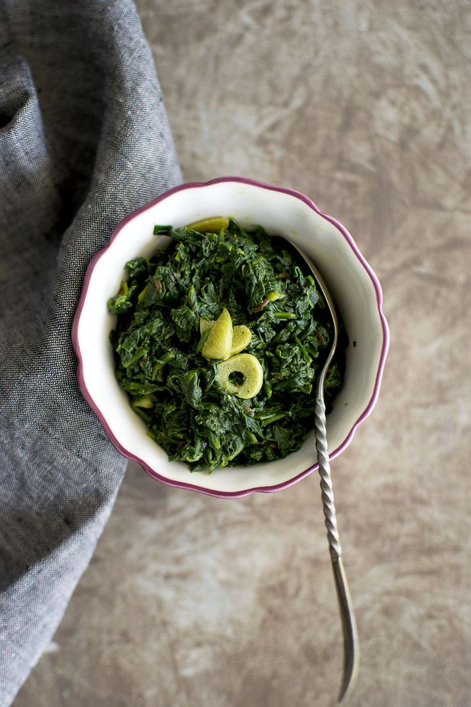
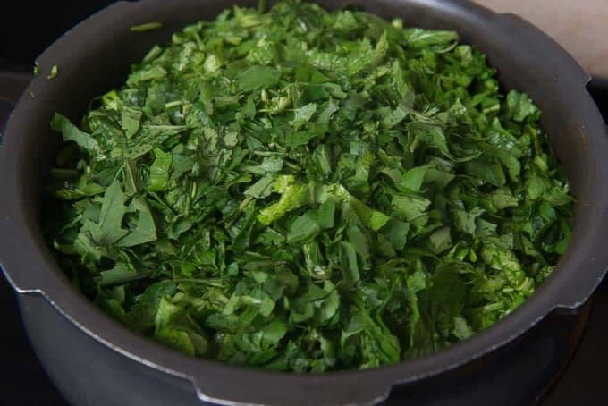
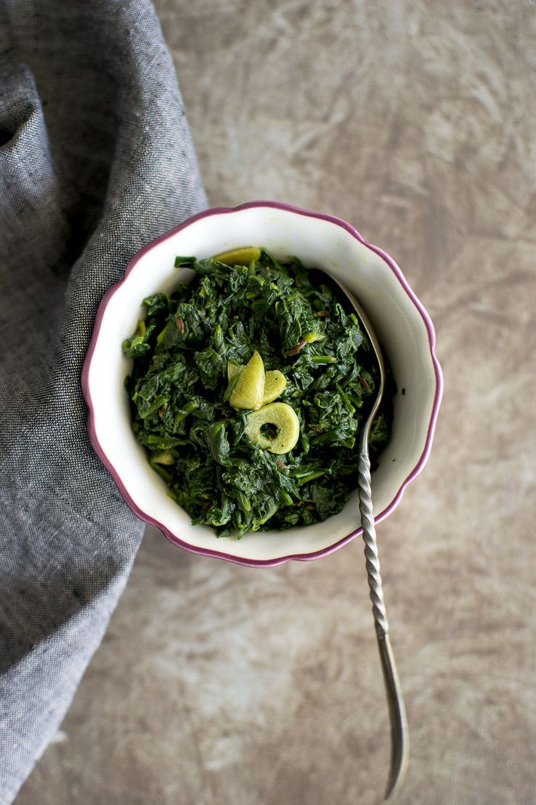
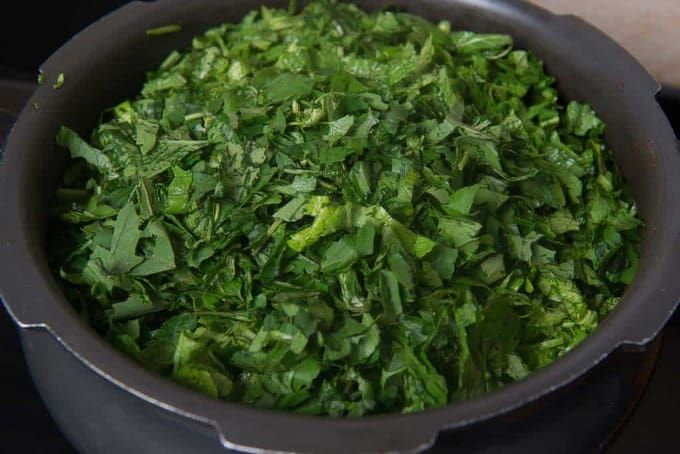

Buff Chhoila
Buff Chhoila is a spicy and smoky Newari dish made from grilled or fried buffalo meat, marinated in mustard oil, garlic, ginger, and traditional Nepali spices.
Explore Recipe 



Spinach (Saag) is a nutritious green leafy vegetable widely used in Nepali cuisine. Often stir-fried with garlic, green chilies, and a hint of mustard oil, it's served as a healthy side dish with rice or dal.
 Prep Time
Prep Time5 - 7 mins
 Cook Time
Cook Time5 - 10 mins
 Ingredients:
Ingredients:  Instructions:
Instructions:  Pro Tips
Pro Tips
Buff Chhoila is a spicy and smoky Newari dish made from grilled or fried buffalo meat, marinated in mustard oil, garlic, ginger, and traditional Nepali spices.
Explore Recipe
Bhatmas Sadheko is a popular Nepali snack made by mixing roasted soybeans with chopped onions, tomatoes, green chilies, garlic, coriander, and a blend of tangy spices.
Explore Recipe
Dal Bhat is one of the staple food in Nepal which is cooked daily in every household.It is steamed and served with side dishes and pickles.
Explore Recipe